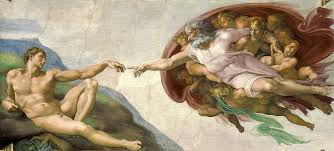

Michelangelo Buonarroti
Italian Renaissance ArtistMichelangelo was one of the greatest artists of the Italian Renaissance, renowned as a sculptor, painter, architect, and poet. His works are celebrated for their power, beauty, and technical mastery.
Masterwork

The Creation of Adam (c. 1512)
Medium: Fresco
Location: Sistine Chapel ceiling, Vatican City
The Creation of Adam is one of the most iconic frescoes in the Sistine Chapel, depicting the biblical moment when God gives life to Adam. The near-touching hands have become a powerful symbol of humanity and divinity. Michelangelo’s dynamic composition and anatomical precision mark this work as a masterpiece of Western art, admired for its symbolism, complexity, and spiritual intensity.